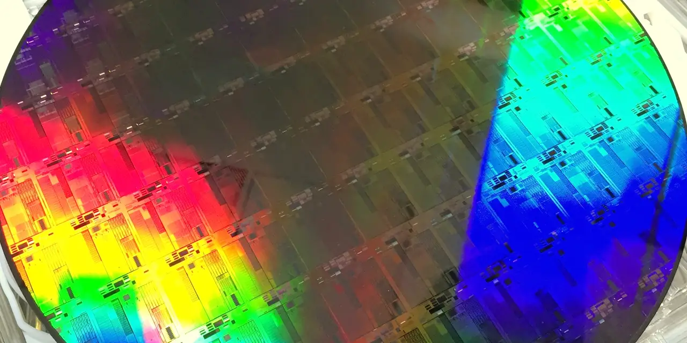

공장 자동화 장비, 전기차 전력 제어, 의료기기 센서, 통신 장비 전원부에는 눈에 잘 띄지 않는 작은 칩들이 계속 들어갑니다. 텍사스 인스트루먼트는 바로 이 자리에서 돈을 버는 회사입니다. 인공지능 반도체처럼 한 번에 큰 화제를 만들지는 않지만, 고객 제품의 설계 안에 들어가면 몇 년씩 같은 부품이 반복해서 팔리는 구조가 강점입니다. 그래서 TXN을 볼 때는 “AI 수혜주인가”보다 “산업 고객의 주문이 정상으로 돌아오고 있는가”가 더 먼저입니다.
아날로그 반도체는 디지털 세계와 실제 물리 세계 사이를 잇습니다. 전압을 바꾸고, 신호를 읽고, 모터를 움직이고, 배터리를 보호하는 역할입니다. 이런 칩은 최첨단 미세공정만으로 승부하지 않습니다. 고객이 오래 쓰는 제품에 들어가야 하므로 안정성, 공급 지속성, 단가, 재고 관리가 더 중요합니다. 텍사스 인스트루먼트의 투자 논리도 화려한 성장률보다 넓은 제품군, 자체 생산, 긴 제품 수명에서 나옵니다.
최근 주가가 더 민감하게 반응하는 부분은 재고와 공장 가동률입니다. 경기 둔화 때 산업 고객은 재고를 줄이고 새 주문을 늦춥니다. 반대로 재고 조정이 끝나면 작은 주문 증가도 아날로그 업체의 마진을 빠르게 바꿀 수 있습니다. TXN의 300mm 자체 팹 전략은 장기적으로 원가 우위를 만들 수 있지만, 설비투자가 먼저 들어가기 때문에 단기 잉여현금흐름과 감가상각 부담도 함께 봐야 합니다.
작은 칩은 오래 남는 주문이 됩니다

텍사스 인스트루먼트의 핵심은 제품 수가 많고, 고객 산업이 넓고, 한 번 설계에 들어간 부품이 오래 남는다는 점입니다. 산업 장비 회사가 전원관리 칩을 바꾸려면 단순히 더 싼 부품을 찾는 것으로 끝나지 않습니다. 인증을 다시 받고, 열 안정성과 신뢰성을 확인하고, 고객 장비의 고장 책임까지 고려해야 합니다. 이 과정이 번거롭기 때문에 좋은 아날로그 칩은 가격을 조금 낮추는 경쟁만으로 쉽게 밀려나지 않습니다.
텍사스 인스트루먼트의 2026년 1분기 실적에서는 이 구조가 다시 숫자로 보이기 시작했습니다. 매출은 48억2500만 달러로 전년 동기보다 19% 늘었고, 영업이익은 18억800만 달러, 순이익은 15억4500만 달러였습니다. 회사는 순차 매출 성장과 전년 대비 성장이 산업과 데이터센터에서 주도됐다고 설명했습니다. 즉 스마트폰 한 제품군의 반등보다 산업 고객 주문 회복이 더 중요한 신호였습니다.
사업부를 나누어 보면 더 선명합니다. 아날로그 부문 매출은 39억2400만 달러로 전년 동기보다 22% 증가했고, 임베디드 프로세싱 매출은 7억2300만 달러로 12% 늘었습니다. TXN의 주가가 단기적으로 좋아지려면 인공지능이라는 단어보다 이 두 부문에서 주문 회복이 계속 이어져야 합니다. 특히 아날로그 부문의 영업이익 증가율이 매출 증가율을 웃돌았다는 점은 가격과 공장 활용도가 함께 움직이기 시작했을 가능성을 보여줍니다.
재고가 줄어야 가격 힘이 돌아옵니다
관련 영상
왜 그들은, 이 미국반도체 기업을 주목하는가. 텍사스 인스트루먼트에 대해
아날로그 반도체 회복은 주문서만 보는 것보다 고객 재고를 함께 봐야 합니다. 산업 고객이 불확실성을 느끼면 새 부품 주문을 줄이지만, 최종 제품 수요가 완전히 사라진 것은 아닐 수 있습니다. 이때 유통 채널과 고객 창고에 쌓인 재고가 먼저 줄어듭니다. 어느 시점부터는 고객이 생산을 멈추지 않기 위해 다시 주문을 넣습니다. TXN 같은 회사는 이 재주문이 시작될 때 매출보다 마진이 먼저 반응할 수 있습니다.
그렇다고 이번 회복을 곧장 장기 호황으로 읽으면 위험합니다. 아날로그 디바이시스도 같은 시장을 보고 있습니다. 애널로그 디바이시스의 2026 회계연도 2분기 실적은 매출 36억2000만 달러였고, 회사는 산업과 통신을 중심으로 모든 최종 시장에서 전년 대비 성장이 있었다고 밝혔습니다. 다음 분기 매출 전망도 39억 달러 안팎으로 제시했습니다. 이는 아날로그 업황이 TXN만의 이야기가 아니라 산업 전반에서 돌아오고 있음을 보여줍니다.
하지만 경쟁사도 함께 좋아지는 국면에서는 가격 힘을 더 꼼꼼히 봐야 합니다. TXN이 제품 수명과 자체 생산 덕분에 방어력을 갖고 있어도, 고객이 ADI나 NXP 같은 다른 공급처를 병행하면 단가 협상은 다시 치열해질 수 있습니다. 주주는 매출 성장률보다 매출총이익률, 유통 채널 재고, 산업·자동차 고객 주문의 연속성을 봐야 합니다. 이번 분기에 들어온 주문이 다음 분기에도 반복되는지가 핵심입니다.
300mm 팹은 원가 우위와 비용 부담을 동시에 만듭니다
텍사스 인스트루먼트의 가장 큰 장기 승부수는 자체 300mm 생산입니다. 300mm 웨이퍼는 200mm보다 한 장에서 더 많은 칩을 만들 수 있어, 수율과 가동률이 안정되면 단위 원가를 낮출 수 있습니다. 아날로그 칩은 최첨단 공정 경쟁보다 긴 제품 수명과 안정적 공급이 중요하므로, 자체 팹을 가진 회사는 고객에게 장기 공급 신뢰를 줄 수 있습니다.
TI는 2025년 12월 셔먼의 새 300mm 팹 SM1에서 생산을 시작했다고 발표했습니다. 회사는 이 시설이 수요에 맞춰 확대되며 장기적으로 하루 수천만 개의 칩을 생산할 수 있다고 설명했습니다. 셔먼 부지는 최대 네 개의 연결된 웨이퍼 팹 계획을 포함하고, 텍사스와 유타의 일곱 개 팹에 600억 달러 이상을 투자하는 큰 그림의 일부입니다.
이 계획은 장기적으로 강력하지만, 회계적으로는 양날의 칼입니다. 2026년 1분기 기준 지난 12개월 동안 TXN은 영업현금흐름 78억2400만 달러를 냈고, 자본지출은 41억300만 달러였습니다. CHIPS Act 인센티브를 포함한 잉여현금흐름은 43억5100만 달러로 전년 동기 기준 지난 12개월보다 크게 회복됐습니다. 좋은 숫자입니다. 다만 이는 설비투자와 정책 인센티브, 공장 가동률이 함께 맞아야 유지되는 숫자입니다.
장비 사이클도 같이 봐야 합니다. 어플라이드 머티어리얼즈의 2026 회계연도 2분기 실적은 매출 79억1000만 달러와 GAAP 매출총이익률 49.9%를 기록했고, 회사는 2026년 반도체 장비 사업 성장이 강하다고 밝혔습니다. 장비 업체의 강한 실적은 반도체 투자가 계속된다는 신호지만, TXN 같은 제조사는 그 투자비를 실제 생산성과 원가 우위로 바꾸어야 합니다. 장비를 사는 것과 주당 현금흐름이 좋아지는 것은 다른 단계입니다.
다음 분기에는 산업 수요와 현금흐름을 같이 봅니다
다음 확인 지점은 네 가지입니다. 첫째, 회사가 제시한 2026년 2분기 매출 가이던스 50억~54억 달러와 주당순이익 1.77~2.05달러의 중간값을 실제로 넘는지입니다. 둘째, 아날로그 부문의 매출총이익률과 영업이익률이 계속 올라가는지입니다. 셋째, 산업과 자동차 고객 주문이 한 분기 반등에 그치지 않고 이어지는지입니다. 넷째, 300mm 팹 가동률이 올라가면서 자본지출 부담을 이익과 현금흐름으로 흡수하는지입니다.
TXN을 긍정적으로 보는 쪽은 자체 생산, 긴 제품 수명, 넓은 고객층을 말합니다. 이 관점은 타당합니다. 회사는 단순히 칩을 설계해 외주 생산하는 구조가 아니라 제조와 공급망을 직접 쥐고 있습니다. 고객이 안정적 공급을 원할 때 이 장점은 가격과 계약 기간으로 이어질 수 있습니다. 300mm 생산이 충분히 차오르면 같은 매출에서도 더 높은 현금흐름이 나올 가능성이 있습니다.
반대로 조심해야 할 쪽은 이미 큰 설비투자를 시작했다는 점입니다. 수요가 예상보다 느리면 새 공장의 감가상각과 고정비가 먼저 보입니다. 아날로그 업황이 좋아져도 경쟁사 회복이 동시에 진행되면 가격 힘은 제한될 수 있습니다. 또한 데이터센터가 매출 성장에 도움을 주더라도 TXN의 본질은 여전히 산업, 자동차, 개인전자, 통신 장비 전반에 걸친 넓은 아날로그 사업입니다. AI라는 단어 하나로 설명하면 회사의 장점도 위험도 흐려집니다.
텍사스 인스트루먼트를 볼 때 가장 좋은 질문은 “이 회사가 다음 유행을 잡았나”가 아닙니다. “고객 재고가 줄고, 산업 주문이 돌아오고, 새 300mm 팹이 가동률을 높이며, 주당 잉여현금흐름이 다시 두꺼워지고 있는가”입니다. 이 네 가지가 같은 방향으로 움직이면 TXN은 조용하지만 강한 반도체 회복주가 될 수 있습니다. 하나라도 어긋나면 주가는 다시 설비투자 부담과 느린 업황 회복을 먼저 반영할 가능성이 큽니다.